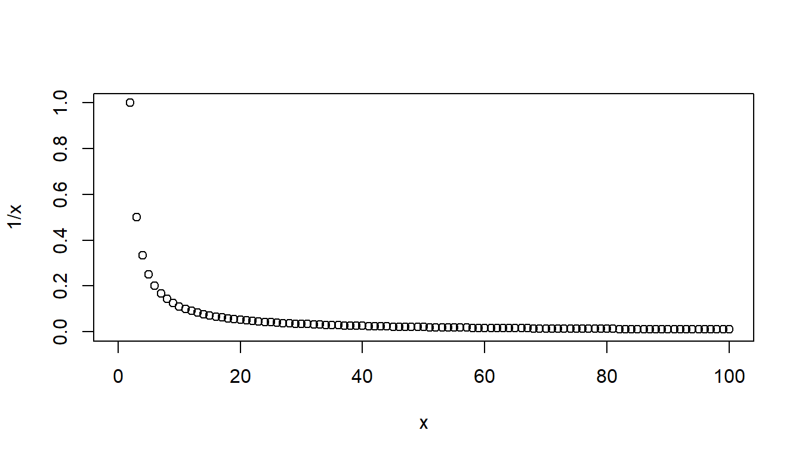

4 Files and For Loops
4.1 The working directory
First we want to change the working directory. This is the folder where R will save and look for data by default (although you can always override this)
Note that the file path (in Windows at least) requires slashes. You can either use two back slashes to separate folders or one forward slash.
setwd("~/Dropbox/Classes/R Programming")
## For Windows, will need to be something like
setwd("C:\\Documents and Settings\\Jacob Montgomery\\My Documents\\RWork")
## or
setwd("C:/Documents and Settings/Jacob Montgomery/My Documents/RWork")
## or
setwd(file.path("C:", "Documents and Settings", "Jacob Montgomery", "My Documents", "RWork"))4.2 Input and output
Now let’s save our newly created dataset
dump("voting.data", "voting.data.R") # inputs are string. Note that you must put the *.R in yourselfYou might also want to save multiple objects
dump(c("vap", "tv"), "voting.data.vectors.R")
dump(list=objects(), "everything.R")
## an alternative we can just use the command
save.image("everything.RData") # saves an image of your current workspaceNow we can clear our wokspace, and load these objects
To read/write dataframes from/to a csv (comma separated values) file, the following commands will be useful
votes.06<-read.csv("~/Dropbox/Classes/R Programming/R Scripts/VotingData2006.csv", header=T)
write.csv(votes.06, file="VD06.csv")Tips: All of the functions for reading in data are actually using the scan() function. No matter how crazy your data look, you can always read it into R by clever use of scan().
4.3 if, else, ifelse
The basic syntax for an if call is
- The inputs in the parentheses needs can be anything that returns a logical.
- You can put anything you want in the braces
The simplest examples possible.
## [1] "I got here"You can combine this with else
if(condition) {
commands to run when condition is TRUE
} else { # notice that these are on the same line
commands to run when the condition is FALSE
}## [1] "X is larger than 2"But this set up will not play well with vectors. It runs, but is confusing
## Warning in if (c(3, 1) > 2) {: the condition has length > 1 and only the first
## element will be used## [1] "This won't work"The ifelse command works nicely with vectors, but syntax is different. This command is equivalent to a ternary in other languages if you’re familiar with that term.
## [1] "no" "yes"WARNING
If your outputs are vectors ifelse will work element-wise
## [1] "no1" "yes2"## [1] "yes1" "no2"- Note that the curly braces are not technically necessary if you have only a one line command
- BUT you should use them anyway so someone can read your code!
## [1] 64.4 repeat and while
- Repeat just repeats commands in the braces until it sees a
BREAKcommand - If you don’t include
BREAKyour computer will be in an infinite loop. - Save your work before using!
- Or maybe just don’t use it
# make a blank plot with the limits set by those vectors
plot(NULL, xlim=c(0, 100), ylim=c(0, 1), xlab="x", ylab="1/x")
x = 1
repeat {
y = 1 / x
x = x + 1
points(x, y)
if (x == 100) {
break
}
}
A while loop is just a repeat, where the break condition is specified at the top
plot(NULL, xlim=c(0, 100), ylim=c(0, 1), xlab="x", ylab="1/x")
x = 1
while(x < 100) {
y = 1 / x
x = x + 1
points(x, y)
}
4.5 for loops
- The
forcommand is probably the most common flow control option. - It has three basic parts:
- An object name that will be used in the following commands
- A vector that we will “loop over”
- Commands that will be executed for each value of the vector
for (monkey in c("Spider", "Howler", "Rhesus")) {
## Each loop does the equivalent of: monkey = "Spider" or monkey = "Howler" or ...
print(monkey)
}## [1] "Spider"
## [1] "Howler"
## [1] "Rhesus"Or more commonly
## [1] 1
## [1] 2
## [1] 3
## [1] 4
## [1] 5
## [1] 6
## [1] 7
## [1] 8
## [1] 9
## [1] 10## for loops are very useful in many situations
plot(NULL, xlim=c(0, 100), ylim=c(0, 1))
for (i in 1:100) {
points(i, 1 / i)
}
4.5.1 next and break
Sometimes you might not want to execute the commands for every element in the vector
use the next command to skip (you can also use the break)
some.odds = NULL
for (i in 1:200) {
if (i %% 2 == 0) {
next
}
some.odds = c(some.odds, i)
}
some.odds## [1] 1 3 5 7 9 11 13 15 17 19 21 23 25 27 29 31 33 35
## [19] 37 39 41 43 45 47 49 51 53 55 57 59 61 63 65 67 69 71
## [37] 73 75 77 79 81 83 85 87 89 91 93 95 97 99 101 103 105 107
## [55] 109 111 113 115 117 119 121 123 125 127 129 131 133 135 137 139 141 143
## [73] 145 147 149 151 153 155 157 159 161 163 165 167 169 171 173 175 177 179
## [91] 181 183 185 187 189 191 193 195 197 199Technically, you don’t have to be so formal. But the indenting and braces are there for the protection of your future self.
## [1] 1
## [1] 2
## [1] 3
## [1] 4
## [1] 5
## [1] 6
## [1] 7
## [1] 8
## [1] 9
## [1] 104.6 Functions
4.6.1 The basics
- Use the ‘function’ command and assign it to an object
- If you need, specify the expected inputs
- Do some stuff
- Return something (and only one thing) to the global environment.
Here’s an example:
countThrees = function(vector) {
threes <- 0
for(i in vector) {
if(i == 3) {
threes <- threes + 1
}
}
return(threes)
}
v <- c(1, 2, 3, 4, 3, 3)
countThrees(v)## [1] 3What would happen if we passed in one number instead of a vector?
## [1] 0## [1] 1Or a matrix?
## [1] 1If you want to return multiple values in R, you must put them in a vector or list and return the data structure instead.
Remember that a list is essentially a vector that can contain different data types.
Sometimes a function will return a value, but other times it will just execute a command like print or plot.
4.7 Setting defaults
You can set default values for some of your arguments or all of them
gaga.equation = function(num.rah=2, num.ah=3, num.ga=2, num.la=2, num.oo=1) {
rahs = paste(rep("RAH", num.rah), collapse=", ")
ahs = paste(rep("AH", num.ah), collapse=", ")
gas = paste(rep("GA", num.ga), collapse=", ")
oo = paste(rep("OO", num.oo), collapse=", ")
las = paste(rep("LA", num.la), collapse=", ")
paste(rahs, ",", ahs, "! ROMA, ROMAMA!", gas, ",", oo, las)
}
gaga.equation()## [1] "RAH, RAH , AH, AH, AH ! ROMA, ROMAMA! GA, GA , OO LA, LA"## [1] "RAH, RAH, RAH, RAH, RAH , AH, AH, AH ! ROMA, ROMAMA! GA, GA , OO LA, LA"If an argument (sometimes called a parameter) does not have a default value, it must be specified when the function is called.
4.8 Scope
In the example above, if we tried to print rahs outside of the function, we would get an error. The variable rahs doesn’t exist in the global environment.
What happens in the function, stays in the function
Remember that for loop variables can be accessed after the loop.
## [1] 3
## [1] 4
## [1] 5
## [1] 6## [1] 4Note that i equals 4 (its last loop value) after the loop is finished.
This is different from functions because the only way to retain access to a local variable that was created in the function is to return it.
a <- 10
outer_func <- function() {
a <- 20
inner_func <- function() {
a <- 30
print(a)
}
inner_func()
print(a)
}
outer_func()## [1] 30
## [1] 20## [1] 10If you try to run inner_func(), it will say “Error in inner_func() : could not find function”inner_func"" because that function is actually a local object inside the function outer_func. That means that outer_func is the only place that can use inner_func.
Scope kind of works like a bunch of one way mirrors. If I write a function, it can access all global variables and local (to the function) variables, but the global environment can only access global variables. In the above code example, inner_func can access all of its variables, all of outer_func’s variables, and the global environment variables as well.
4.9 Advanced scope topics
In R, there’s a superassignment operator which is <<-
This assigns the variable to one environment up from its current location. Check out these examples and try to follow along with the environments.
This example will replace the global variable a (which used to store 10) with 20 from the outer_func code. Printing a at the end of the script will print 20 this time.
a <- 10
outer_func <- function() {
a <<- 20
inner_func <- function() {
a <- 30
print(a)
}
inner_func()
print(a)
}
outer_func()## [1] 30
## [1] 20## [1] 20This example will replace a from the outer_func environment with the value 30 so when outer_func prints a, it will now contain 30.
a <- 10
outer_func <- function() {
a <- 20
inner_func <- function() {
a <<- 30
print(a)
}
inner_func()
print(a)
}
outer_func()## [1] 30
## [1] 30## [1] 10